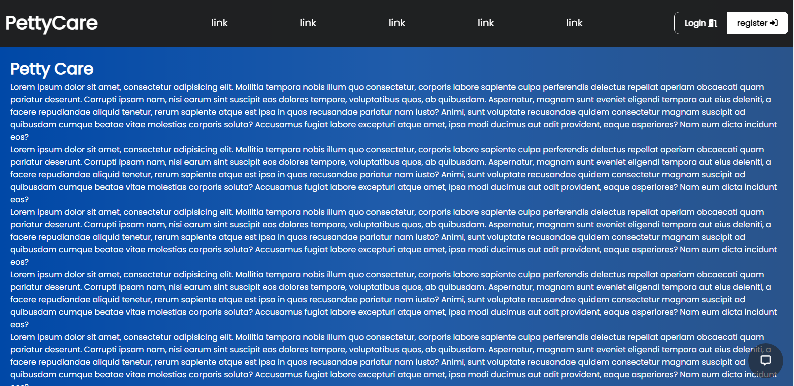

Proyectos Programación

PettyCare
Es un proyecto hecho en el año 2023, trata de una aplicación que usa php, mysql, javascript, html y css.
Esta es una aplicación para la gestión de comidas, medicacion, tratamientos y demás datos sobre las mascotas.

TecNews
Es una aplicación desarrollada con node.js, express y el lenguaje de plantillas Ejs, esta es una aplicación de noticias sobre tecnología desarrollada en el año 2022 a manera de plan lector de informatica.
Ver proyecto
TwilightBot
Este proyecto trata aplicación basica de tareas automatizadas en la aplicación de Discord, este usa el lenguaje de programación javascript y el framework de discord.js, megadb, fs y muchos más.
Ver proyecto